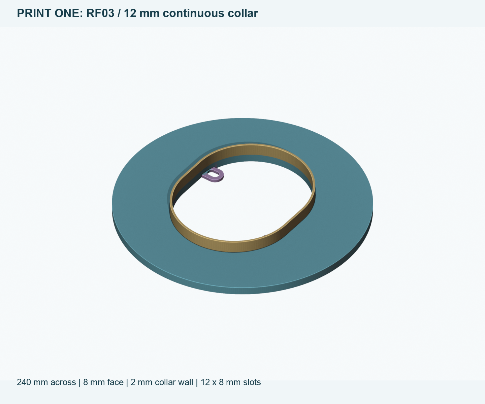
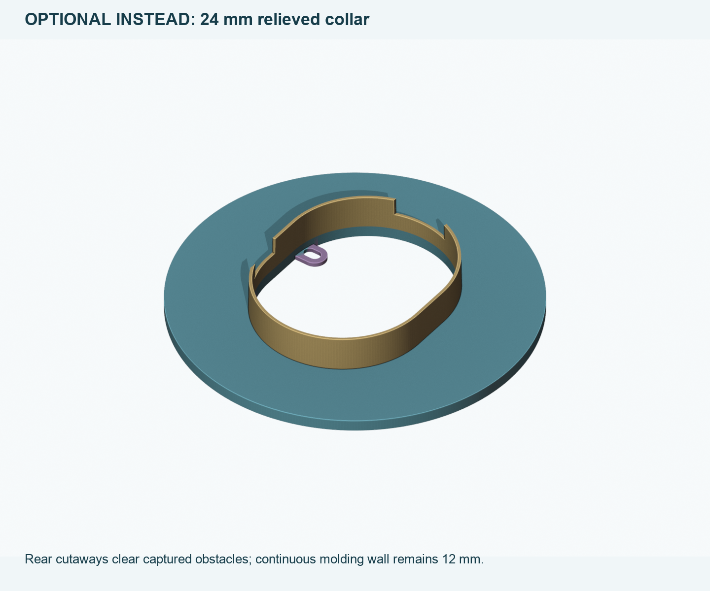
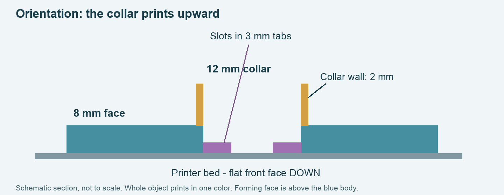

One temporary repair form with the smaller 12 x 8 mm locating slots. Print the continuous 12 mm collar first. The deeper relieved form is an optional alternative.
Generic 3MF, STL, editable STEP, illustrated PDF and exact settings. No wall assembly or scans.
Print one, not both formats. Keep 100% size.
Default: 240 x 240 x 20 mm. Continuous 12 mm collar.

Optional: 240 x 240 x 32 mm. Reaches 24 mm in places; only 12 mm continuous.
The forming face is 8 mm rather than 12 mm. The collar stays 2 mm thick and the tabs 3 mm. This removes 32.4% of the solid CAD volume. Use 5 walls, 1.2 mm skins and 25% infill in PETG. The front annulus still needs independent padded bracing; the locating rods carry no repair load.

Allow 250 x 250 mm usable print area, including 5 mm brim. A 220 mm bed is too small. Check clips and exclusion zones; do not shrink to fit. The 3MF has geometry only: use your friend's own printer and PETG profile. 0.4 mm nozzle, 0.20 mm layers, supports off, raft off. Read the PDF before printing.
Generous allowance for a whole delivered spool ($45), power/drying ($5), wear/consumables ($10), and setup/cleanup thank-you ($15), including material for one retry. Typical consumed plastic is much less: estimated 160-240 g, or $5.60-$8.40 at our conservative $35/kg input. Actual printer timing and charges are unknown.
Remove the rod-end nuts for placement. Rehearse full-face seating and straight withdrawal. Protect the valve; retain the separate supported repair/release procedure. Remove all tool, liner and pad material afterward. This is not the final decorative plate or a permanent waterproof liner.
Geometry checks · Captured clearance scope · Fresh print audit · CAD-only Blender views